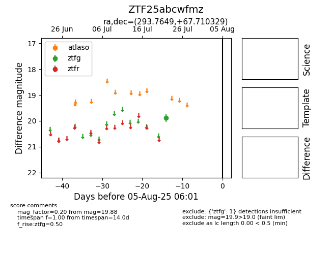

Target ZTF25abcwfmz at 2025-08-05 06:01, see:
FINK: fink-portal.org/ZTF25abcwfmz
Lasair: lasair-ztf.lsst.ac.uk/objects/ZTF25abcwfmz
ALeRCE: alerce.online/object/ZTF25abcwfmz
alt names
ZTF25abcwfmz (ztf,fink)
coordinates:
equatorial (ra, dec) = (293.7649,+67.71033)
galactic (l, b) = (99.4235,+20.98041)
photometry
last ztfg=19.88
1 ztfg detections
